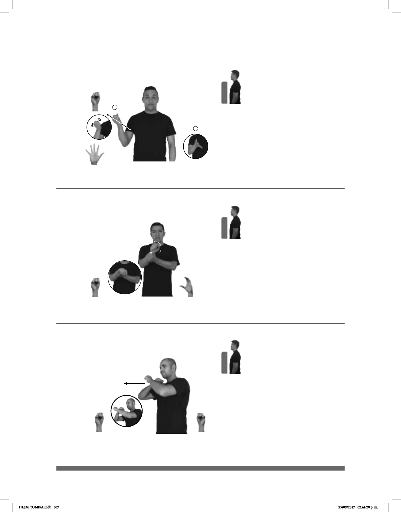

307
Seña: SB
MD S.1, MB C.1
MD palma oblicua hacia
fuera y hacia bajo. MB palma oblicua
hacia dentro y hacia arriba.
A la altura del pecho.
MD se mueve de atrás ha-
cia
MB sostiene la muñeca de MD.
Cabeceo repetiti-
vo, punta de la lengua hacia afuera.
loc. v. Ignorar, no dar
importancia o valor a lo que dice una
persona, tratar a alguien con poca
consideración.
Seña: SS
S.1
Las palmas se encuentran
frente a frente.
A la altura del pecho, las manos
se cruzan.
Las manos golpean hacia
fuera en línea recta.
Cabeza y cuerpo
inclinados hacia atrás.
Simula la acción de
defenderse de un golpe.
v. tr. Proteger algo o a alguien
de un ataque, un daño o algún
inconveniente.
(S-41)
(S-42)
SIEMPRE TODO pos-TU ESPOSO DAR-EL-AVIÓN
Tu esposo siempre me da el avión en todo.
VACUNAS PROTEGER ENFERMEDAD
Las vacunas te protegen de las enfermedades.
1
2
Seña: I. y II. SM
I. S.1; II. Seña que pasa de
S.1 a 5.1
I. y II. Palma oblicua hacia
arriba y hacia la izquierda.
I. A la altura del hombro; II. Del
hombro al pecho.
I. La mano se agita; II. Recto
mientras los dedos se extienden.
Simula la acción de lanzar
los dados.
sust. m. Objeto generalmente
cúbico en cuyas caras aparecen puntos que
diferentes.
(S-40) Dados
AYER dm-JOSEFINA, dm-ALBERTO pro-DOS-DE-ELLOS DADOS JUGAR
DLSM COMISA.indb 307 25/09/2017 02:44:20 p. m.